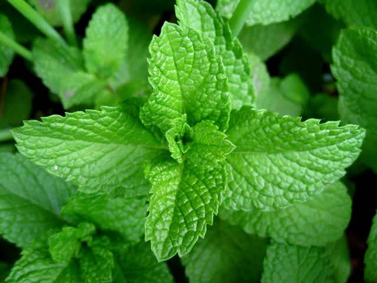

Nuestras Plantas Destacadas
Hoja de Coca
Una planta ancestral con propiedades estimulantes y medicinales...
Sábila
Conocida por sus propiedades cicatrizantes y antiinflamatorias...
Manzanilla
Una infusión popular por sus efectos relajantes y digestivos...

Menta
Refrescante y digestiva, ideal para aliviar malestares estomacales...
Eucalipto
Ideal para problemas respiratorios, con propiedades descongestionantes...
Preguntas Frecuentes sobre Plantas Medicinales
¿Cuál es la diferencia entre una planta medicinal y una hierba aromática?
Aunque a menudo se superponen, una planta medicinal se usa específicamente por sus propiedades terapéuticas, mientras que una hierba aromática se usa principalmente por su sabor y aroma en la cocina, aunque muchas también tienen beneficios para la salud.
¿Es seguro usar plantas medicinales?
Muchas plantas medicinales son seguras cuando se usan correctamente, pero algunas pueden tener efectos secundarios o interactuar con medicamentos. Siempre es recomendable consultar a un profesional de la salud antes de usarlas, especialmente si tienes condiciones médicas preexistentes o estás embarazada.
¿Cómo se preparan las plantas medicinales?
Las preparaciones más comunes incluyen infusiones (tés), decocciones (hervir la planta), tinturas (extractos en alcohol), cataplasmas (aplicaciones tópicas) y aceites esenciales. La preparación depende de la planta y el uso deseado.
¿Dónde puedo conseguir plantas medicinales de buena calidad?
Puedes encontrarlas en herboristerías, tiendas de productos naturales, mercados especializados o incluso cultivarlas tú mismo. Es importante asegurarse de que provengan de fuentes confiables y sean de buena calidad, preferiblemente orgánicas.
¿Las plantas medicinales son un sustituto de la medicina convencional?
No necesariamente. En muchos casos, las plantas medicinales son un complemento a la medicina convencional, no un reemplazo. Para enfermedades graves o crónicas, siempre se debe buscar atención médica profesional.
¿Qué propiedades tiene la Hoja de Coca?
La Hoja de Coca ha sido tradicionalmente usada como estimulante, para combatir el cansancio, el mal de altura y como digestivo. Contiene vitaminas, minerales y alcaloides.
¿Para qué sirve la Sábila (Aloe Vera)?
La Sábila es ampliamente reconocida por sus propiedades cicatrizantes, antiinflamatorias, hidratantes y antibacterianas, ideal para quemaduras, irritaciones de la piel y problemas digestivos.
¿Cómo se utiliza la Manzanilla para la relajación?
Una infusión de flores de manzanilla es un remedio común para la ansiedad, el insomnio y el estrés debido a sus compuestos sedantes. También ayuda a aliviar problemas digestivos.
¿Qué beneficios tiene la Menta?
La Menta es conocida por aliviar problemas digestivos como la indigestión, náuseas y gases. También es un buen descongestionante nasal y tiene propiedades analgésicas leves.
¿Para qué enfermedades respiratorias se recomienda el Eucalipto?
El Eucalipto es muy eficaz para afecciones respiratorias como resfriados, gripe, bronquitis y sinusitis. Ayuda a descongestionar las vías respiratorias y tiene propiedades expectorantes.
¿Tienes alguna pregunta?
Envíanos un mensaje y te responderemos lo antes posible.